MYOCYRA-S — Baseline State
Enter baseline measurements in the physiologic domains below. The echo examples sit beside the corresponding measurements. For ICp, ICn, IRp and IRn, an absent directional signal is entered as 0.
Body Surface Area
Enter BSA once; indexed measurements are calculated automatically.
1. LV Chamber Remodeling — ESVi
Residual LV chamber volume after systolic contraction; enlargement reflects adverse remodeling.
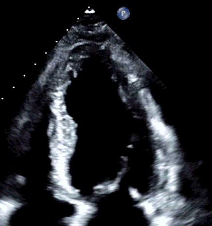
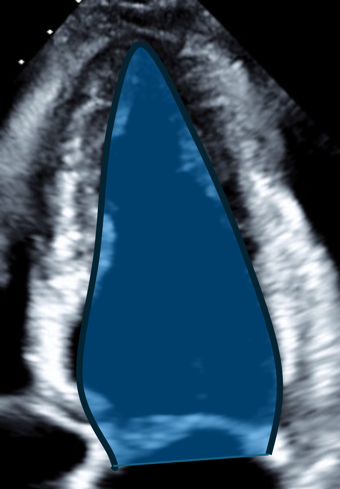
2. LV Geometry — LVMI & RWT
LVMI reflects myocardial mass burden; RWT reflects concentricity.
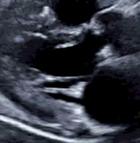
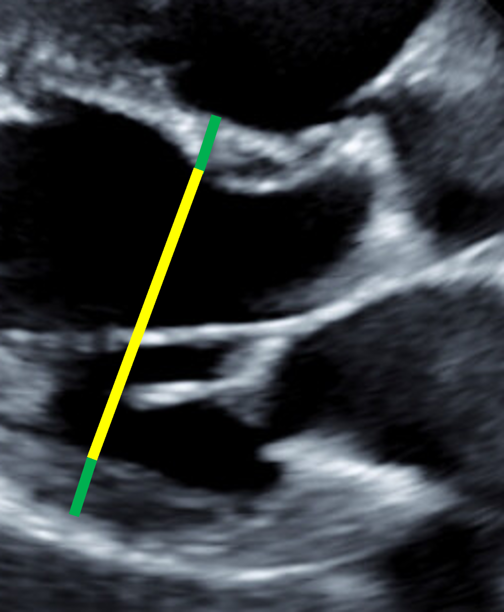
3. Longitudinal Systolic Function — S′
Peak systolic annular velocity; a marker of longitudinal LV systolic mechanics.
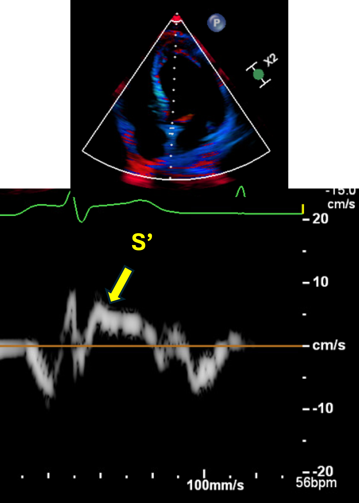
4. Isovolumic Mechanics — IC/IR & IVA
Directional pre-ejection contraction and post-ejection relaxation plus isovolumic acceleration.
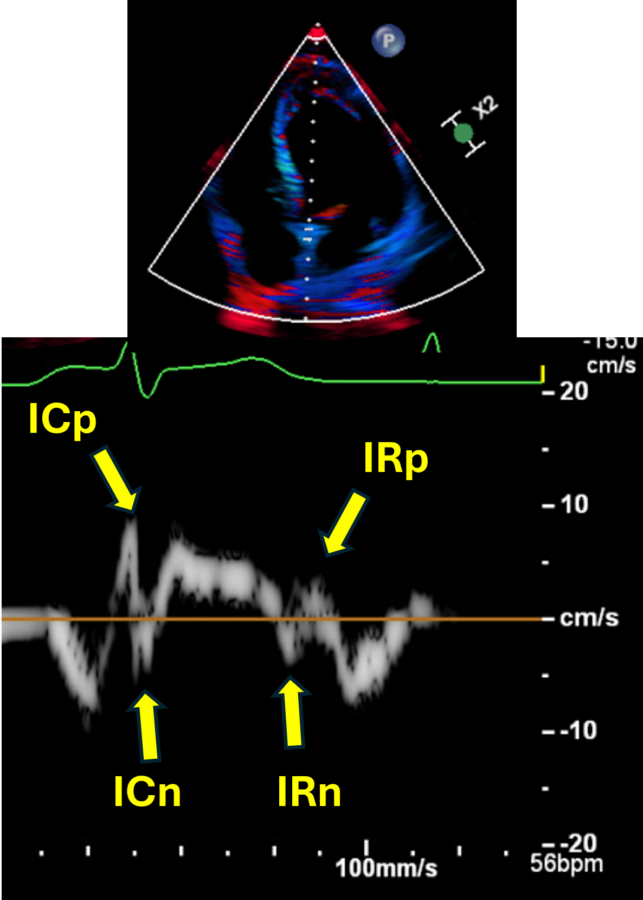
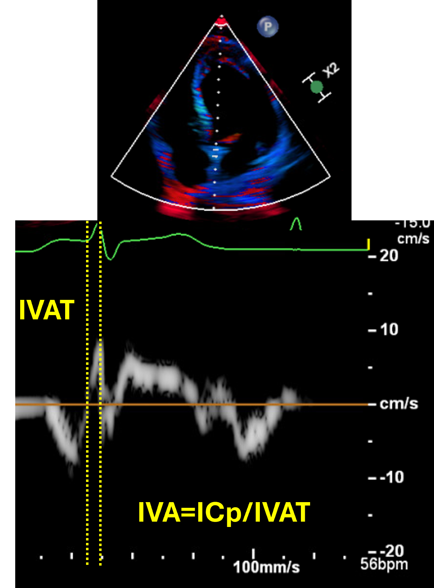
5. Diastolic Filling & Relaxation — E & e′
E reflects early transmitral filling; e′ reflects myocardial relaxation. E/e′ is displayed but is not a MYOCYRA input.
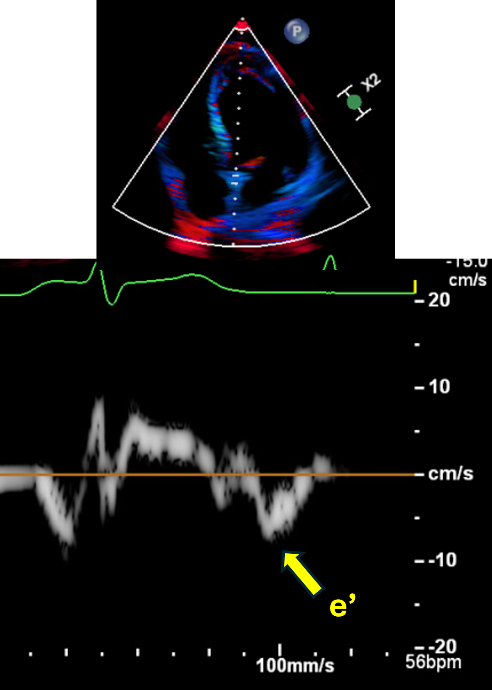
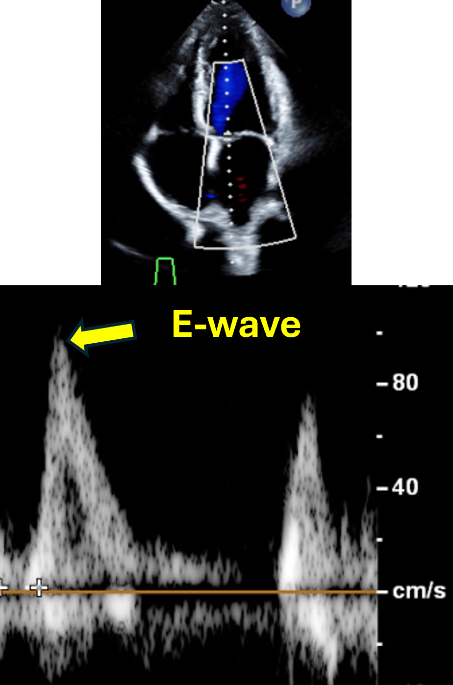
6. Left-Atrial Remodeling — LAVI
Reflects chronic atrial remodeling and cumulative exposure to abnormal filling physiology.
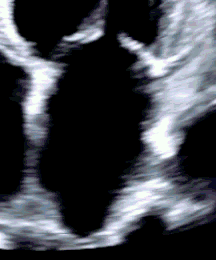
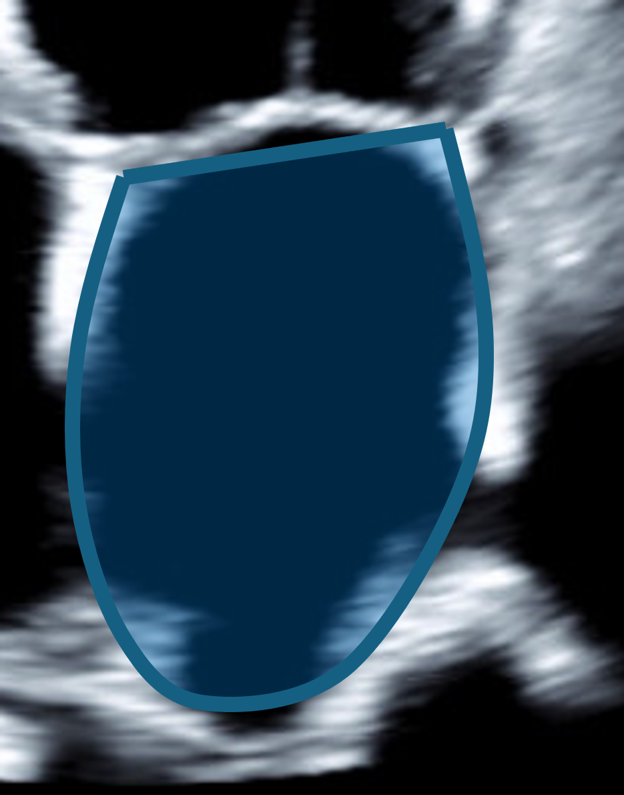
7. Right-Heart Function & Remodeling — TAPSE & RV Basal Diameter
TAPSE reflects RV longitudinal systolic function; RV basal diameter captures chamber remodeling.
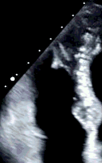
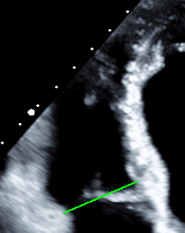
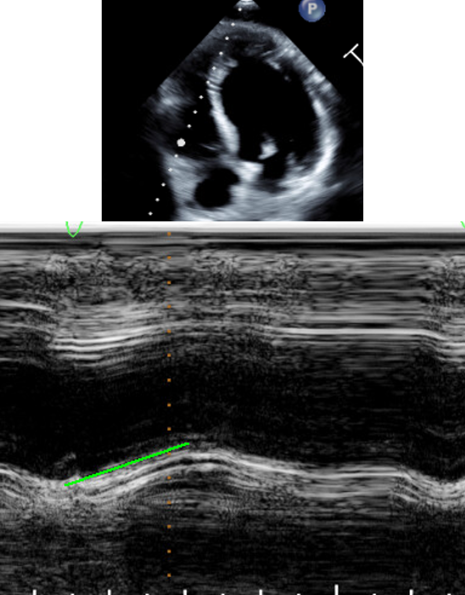
MYOCYRA-T — Follow-up Transition
Enter the follow-up echocardiogram in the same way as baseline. BSA is entered again for the follow-up study; indexed and derived measurements are calculated automatically. Green/red reference badges are displayed using the same rules as baseline.
Body Surface Area
1. LV Chamber Remodeling — ESVi
2. LV Geometry — LVMI & RWT
3. Longitudinal Systolic Function — S′
4. Isovolumic Mechanics — IC/IR & IVA
5. Diastolic Filling & Relaxation — E & e′
6. Left-Atrial Remodeling — LAVI
7. Right-Heart Function & Remodeling — TAPSE & RV Basal Diameter
Follow-up interval
Methods
MYOCYRA-S integrates 15 continuous dimensions: ESVi, LVMI, RWT, S′, |IC|, IC polarity, |IR|, IR polarity, IC–IR angle, IVA, E, e′, LAVI, TAPSE and RV basal diameter. EF, GLS, E/e′, TRV, medications and outcomes are excluded from model construction.
Physiologic domains
ESVi reflects residual systolic chamber volume. Pathologic elevation accompanies adverse LV dilation/remodeling.
LVMI reflects myocardial mass burden; RWT reflects concentricity. Together they describe hypertrophic and remodeling patterns.
S′ reflects longitudinal annular systolic motion and declines with impaired longitudinal contraction.
IC/IR magnitude, polarity, coupling and IVA characterize directional pre-ejection contraction and post-ejection relaxation beyond conventional systolic indices.
E and e′ separately represent transmitral filling and myocardial relaxation; discordance can reflect abnormal loading or impaired relaxation.
LAVI reflects chronic atrial remodeling and cumulative exposure to abnormal filling physiology.
TAPSE reflects RV longitudinal systolic function; RV basal diameter captures structural remodeling.
Measurement equations
Absence of an ICp, ICn, IRp or IRn directional component is treated as a true zero state rather than missing data.
Structural geometry
State geometry
Baseline standardization, Gaussian-kernel bandwidth, 126-patient reference geometry and diffusion coordinate are frozen in this version. New observations are projected into that reference space.
Transition
Negative values indicate a more favorable-than-expected trajectory; positive values indicate a more adverse-than-expected trajectory.
How the 100-point MYOCYRA-S Score Is Derived
MYOCYRA-S is not a conventional additive point score. No fixed number of points is assigned to an abnormal ESVi, LVMI, tissue velocity, or other individual variable. Instead, the complete echocardiographic phenotype is represented as a point in a 15-dimensional physiologic state space. Nonlinear manifold analysis then determines where that state lies along the dominant whole-heart physiologic continuum. The final 0–100 value is the patient's percentile position within the frozen baseline reference distribution.
Step 1 — Construct the 15-dimensional cardiac state
The input vector contains ESVi, LVMI, RWT, S′, |IC|, IC polarity, |IR|, IR polarity, IC–IR angle, IVA, E, e′, LAVI, TAPSE, and RV basal diameter. These dimensions span LV chamber remodeling, LV geometry, longitudinal systolic motion, directional isovolumic mechanics, filling/relaxation, left-atrial remodeling, and right-heart physiology.
EF, GLS, E/e′, TRV, medications, and clinical outcomes are excluded from construction of the state coordinate. They can therefore be evaluated independently against MYOCYRA rather than being mathematically embedded within it.
Step 2 — Convert directional IC/IR signals
Positive and negative isovolumic components are retained as directional information and transformed into magnitude, polarity, and contraction–relaxation coupling:
An absent ICp, ICn, IRp, or IRn directional component is treated as a true physiologic zero, not as missing data.
Step 3 — Standardize measurements
Because the 15 measurements use different units and numerical scales, each dimension is standardized using the mean (μₖ) and standard deviation (σₖ) of the frozen derivation dataset:
This converts every variable to a dimensionless scale so that a variable measured in mL/m² does not dominate another measured in cm/s simply because of its numerical units.
Step 4 — Measure multidimensional physiologic distance
Each patient is now a point in standardized 15-dimensional space. The squared Euclidean distance between patients i and j is:
A small distance means two hearts have similar multidimensional physiology; a larger distance means their combined structural and functional states are more dissimilar.
Step 5 — Build a nonlinear similarity network
Distance is converted to physiologic similarity with a Gaussian kernel:
Here ε is the frozen kernel bandwidth. Nearby physiologic states receive strong connections, while distant states receive progressively weaker connections. This allows the model to capture curved and nonlinear relationships that would be poorly represented by a single linear weighted sum.
Step 6 — Recover the latent whole-heart continuum
The similarity matrix is normalized and spectrally decomposed using diffusion-map geometry. The principal non-trivial diffusion coordinate, ψ, represents the dominant continuous organization of the observed whole-heart state space. The sign/orientation of ψ is frozen so that movement toward larger MYOCYRA-S values corresponds to movement toward the adverse end of the reference-state continuum.
This is the key distinction from a traditional score: MYOCYRA does not ask how many abnormalities are present. It asks where the combined cardiac phenotype lies within the geometry formed by all observed phenotypes.
Step 7 — Convert ψ into the 0–100 MYOCYRA-S scale
The raw diffusion coordinate has no intuitive clinical units. It is therefore transformed using the empirical cumulative distribution of ψ in the frozen baseline reference dataset:
For example, a MYOCYRA-S of 80 means that the projected state lies at approximately the 80th percentile of the reference-state continuum. It does not mean an 80% probability of death, hospitalization, heart failure, or another clinical event. Lower values represent the more favorable end of the observed reference continuum and higher values the more adverse end.
Step 8 — Score a new patient without rebuilding the model
For a new echocardiogram, the same 15 measurements are calculated, standardized using the original frozen μ and σ values, and projected into the existing diffusion geometry using the frozen reference states and kernel bandwidth. The reference manifold is not re-estimated when a new patient is entered. The resulting ψ is then converted to MYOCYRA-S using the frozen baseline percentile distribution.
Longitudinal extension — MYOCYRA-T
A follow-up echocardiogram is projected into exactly the same frozen state space. Rather than reporting only the difference between two percentiles, MYOCYRA-T asks whether the observed follow-up state is better or worse than expected given the patient's starting state and elapsed time.
MYOCYRA-T is therefore expressed in standard-deviation units relative to the expected longitudinal trajectory. Negative values indicate a more favorable-than-expected transition, values near zero indicate evolution close to expectation, and positive values indicate a more adverse-than-expected transition.
Frozen research implementation
The current research implementation freezes the variable definitions, standardization parameters, Gaussian-kernel bandwidth, baseline reference geometry, diffusion-coordinate orientation, empirical baseline percentile distribution, and longitudinal transition coefficients. This ensures that future observations are projected reproducibly into the same reference system rather than generating a new score geometry each time the calculator is used.
Version
MYOCYRA research model v0.5.4 — frozen derivation implementation developed from a research dataset comprising 126 complete baseline echocardiographic states and 105 paired baseline–follow-up states. External validation is required before clinical use.